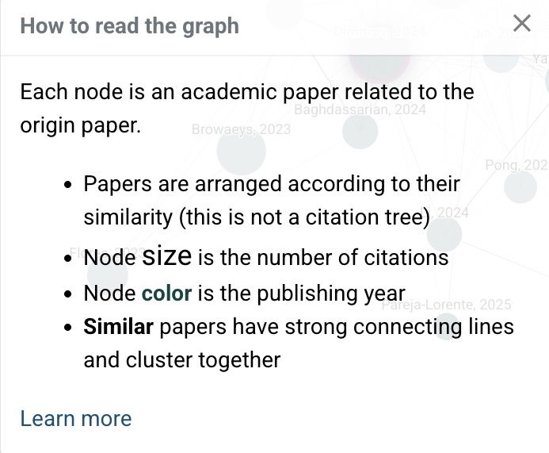
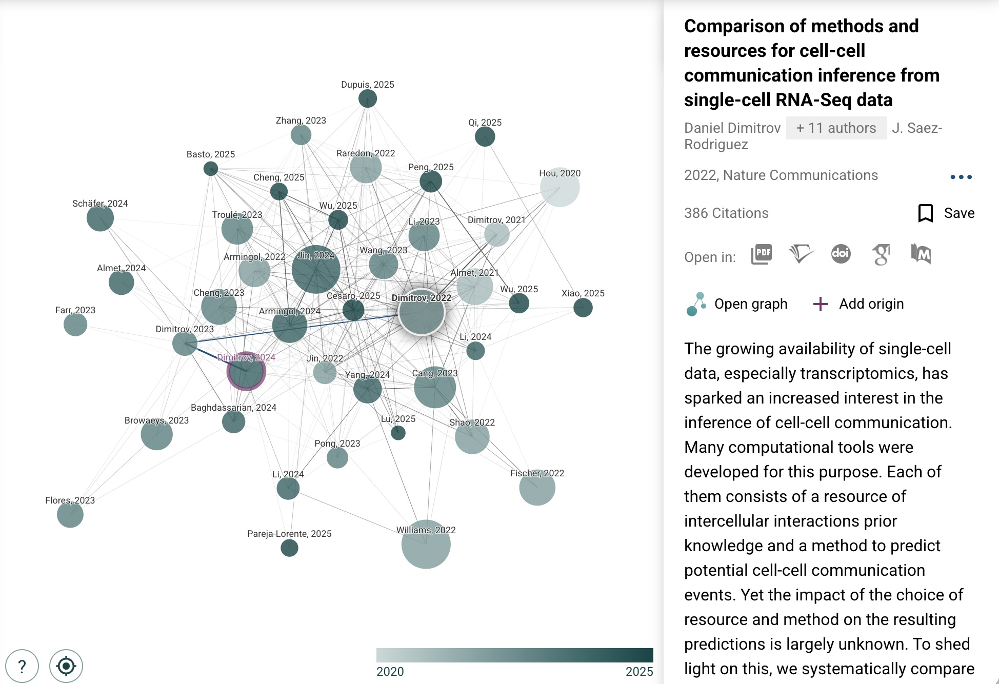
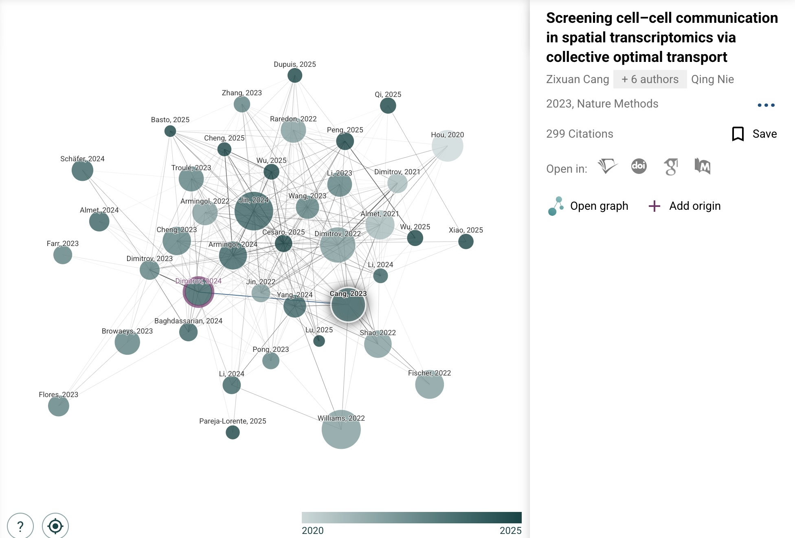

Connected Papers Interface Analysis and Redesign
This project analyzes and redesigns part of the Connected Papers interface, with a focus on how users explore papers related to an origin paper in the graph view.
Application Name and Details
Connected Papers
https://www.connectedpapers.com/
Interactive academic literature discovery website
Graph-based paper exploration interface
We are analyzing how Connected Papers helps users explore papers related to an origin paper, interpret graph relationships, and read paper details from the side panel.
The interface uses a network graph in which each node is a paper related to the origin paper. According to the website's own explanation, papers are arranged by similarity, node size indicates citation count, node color indicates publishing year, and stronger lines indicate stronger similarity.
Project Summary
Our redesign project focuses on the usability of Connected Papers as an interactive literature exploration system. We are especially interested in whether the graph representation matches what users actually want to do when they search for a paper. In many cases, users are less interested in the overall similarity structure among all papers and more interested in identifying which papers are most relevant to the origin paper.
Based on an initial review of the interface, we identified several possible issues, including graph layout that may not match the user's main task, inconsistent information displayed in the paper detail panel, limited explanation of visual encodings, and a graph that can become visually overwhelming.
Initial Usability Issues Identified
- Graph layout does not prioritize the user's main task: papers are arranged by similarity to each other, but users may care more about how each paper relates to the origin paper. Graph 4
- Inconsistent paper details: some selected papers show a description or abstract in the side panel, while others only show basic metadata. Graph 2 and Graph 3
- Visual encoding is easy to miss: node size, color, and line strength are explained in a separate help panel rather than being integrated into the graph view. Graph 1 and Graph 4
- The graph can feel visually dense: the number of nodes, labels, and connections may increase cognitive load for users. Graph 4
Reference Screenshots
These screenshots document the current interface and will be used to support our later analysis and redesign ideas.




Next Steps
- Conduct an observational user study focused on literature discovery tasks.
- Document concrete usability problems from user interactions.
- Create low-fidelity redesign sketches for the graph and paper detail panel.
- Explain how the redesign better supports user goals and reduces confusion.